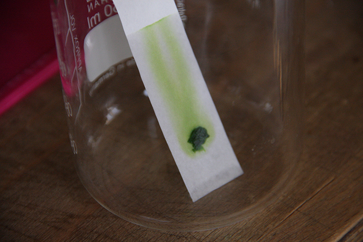

Margot2001.GitHub.io
10 weeks at the biohack academy at the Waag
Class 7 - Bioethics
Choloroplast Isolation

What is in this leave of spinach?
Many things!, one of which is chloroplast. Chloroplasts are organelles, specialized subunits, in plant and algal cells.Chloroplasts' main role is to conduct photosynthesis, where the photosynthetic pigment chlorophyll captures the energy from sunlight and converts it and stores it in the energy-storage molecules ATP and NADPH while freeing oxygen from water. They then use the ATP and NADPH to make organic molecules from carbon dioxide in a process known as the Calvin cycle. The rest you can google, our favourite tutor ;)

Chop the leaves as small as possible

put this mash on some paper. We used lab paper, but that is quite expensive. We couldnt think of another cheaper paper. sorry.
Next you can test which medium will break the cell of the spinach best





As you can see, aceton works best.